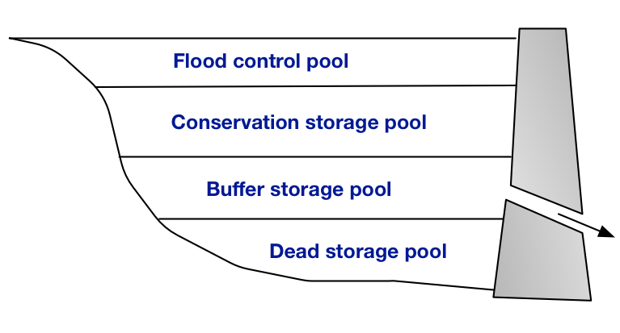

Water resources system model
General approach
The Mwache water resources system is modeled as a node-link network, a common approach used in the catchment-scale river basin simulation of and analysis (McKinney 1999; Rosegrant 2000; Cai et al., 2006). The model is coded in the R statistical computing environment.
The model consists of a set of nodes and links, in which nodes represent physical features in the system such as rivers, reservoirs, streamflow gages or demand sites; and links represent connections between the nodes, for example a diversion channel from the river to an irrigation site (Figure 1).
Figure 1 - Mwache water resources system
The aim of the model is to consistently simulate water flow and mass balance in the system, and compute instream and off-stream uses based on the physical and policy constraints. Mass balance is conserved at each node in the system, which states that at any given time period \(t\), the total inflow (\(Q_t\)) is equal to the sum of total outflow (\(R_t\)), net change in storage \(\Delta S_t\), and losses (\(L_t\)).
\begin{equation} Q_t = R_t + \Delta S_t + L_t \label{eq:inflow} \end{equation}
Additional equations to \eqref{eq:inflow} are introduced to meet the node specific requirements, for example the flows to the demand sites are constrained by their supply requirements, and flows from the reservoirs are constrained by the operating policy etc.
Reservoir operations
A reservoir's operating rules determine how much water is available in a given month for release, to satisfy off-stream demand and instream flow requirements. Reservoir operating rules are defined based on the following assumptions.
Total storage of the reservoir is divided into four pools from top to down that are flood-control, conservation, buffer, and inactive respectively (Figure 2).

Figure 2 - Illustration of reservoir storage pools
Water available for release at any given period is given by the total amount of water in the flood-control and conservation pools, plus a fraction of the water in the buffer pool (2). The fraction of water available for release from the buffer pool is determined by the buffer coefficient (\(\beta\)). The buffer coefficient is a dimensionless number from 0 to 1. Once the storage level in the reservoir drops into the buffer pool, the release at that month will be restricted according to \(\beta\), in order to conserve a fraction of the water supply for the future.
For example, a larger value for \(\beta\) (closer to 1) will cause downstream demands to be met more fully at that given period; whereas a lower value of \(\beta\) (closer to 0) will preserve more water for the subsequent period(s).
\begin{equation} {Pool} = {Pool}_{Flood-control} + {Pool}_{Conservation} + {Pool}_{Buffer} * \beta \label{eq:pool} \end{equation}
The final storage volume in period t, \(S_{t+1})\), will equal the initial volume, \(S_t\), plus total inflows \(Q_t\), total releases \(R_t\), and evaporation and seepage losses \(L_t\).
\begin{equation} S_{t+1} = S_t + Q_t - R_t - L_t, \qquad \forall t \label{eq:storagevol} \end{equation}
\(R_t\) is constrained by the storage pool available for releases at period t, \({Pool}_t\):
\begin{equation} R_t \leq {Pool}_t \label{eq:releases} \end{equation}
Prioritization of water uses
Releases at a given time period, \(R_t\) is the summation of environmental, domestic and irrigation releases and spills (if any). Water allocation to environmental, domestic, and irrigation uses are implemented by a simple prioritization rule, in which at a given period, the demand site with priority 1 is allocated water before the second priority. For example, when the priority order is specified as environmental, domestic, and irrigation, no water is supplied for the domestic use until the specified environmental release requirement is fully met. Similarly, no water is allocated to irrigation use before all the demand from environmental and domestic uses are met.